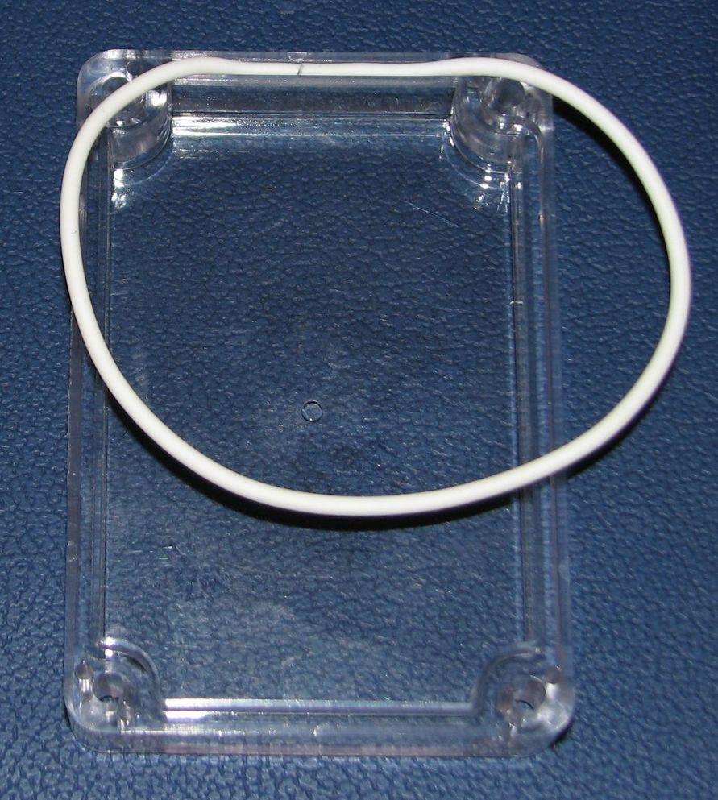
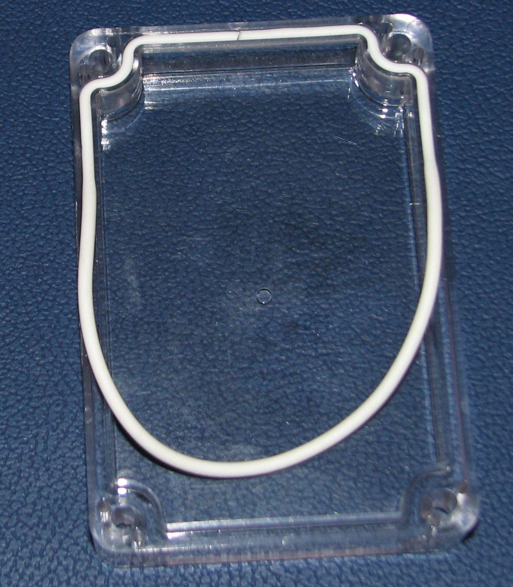
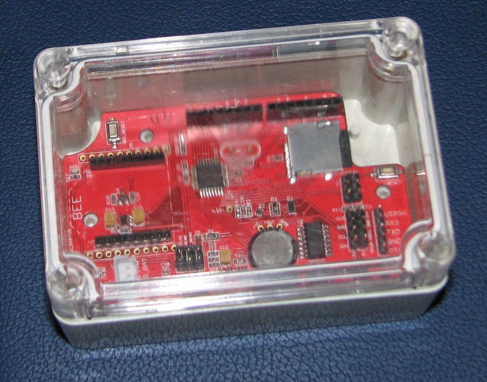

Link to product page for this device (follow this link to buy):
Seeeduino Stalker v2.0 Enclosure
: ACC101A1B
Since Seeeduino Stalker is designed for use as a wireless sensor network node, it would be incomplete without an accompanying weather-proof enclosure. Keeping that in mind, while redesigning the newer version of Seeeduino Stalker (revision from v1.0 to v2.0) we adjusted the PCB outline and the location of the screws such that it could fit in this enclosure. The enclosure is tough and has a water proof seal. The top lid of the enclosure is transparent so that you can mount a solar cell inside it.
50 mm (H) x 68 mm (W) x 100 mm (D)
4 screws and a length of rubber cord for use as a gasket have been supplied along with this enclosure. The supplied screws are for fastening the lid to the base. Screws for mounting the Seeeduino Stalker v2.0 board inside the base have not been supplied.

A length of rubber cord has been supplied with the enclosure for use as a gasket. If it's your first time installing a lid with a water tight mechanical seal, then you might wonder: "The length of this supplied rubber cord seems to be a bit short!". Rest assured, the length of the rubber cord is meant to be short by design! While installing the lid, the cord is meant to be stretched and compressed between the lid and the base to give a tight seal. Here are the steps for installing the seal:
| Step 1: Layout the lid upside down and
with its longer side away from you. |
 Step 2: Press the two ends of the rubber cord next
to each other snugly into the channel provided for along one of the breadth-wise edge of the lid. The ends of the cord must be at the center of the edge. |
|  Step 3: Now moving away from the center (where the
two ends of the cord meet) press the cord into the channel along the edge. Continue as you move across the corner and on to the length-wise edges. You may need to pull along the length of the cord and cause it to stretch so that it fits completely and with uniform thickness along the whole rim of the lid. |
Step 4: Pullout the center of the remaining loop
of the cord and anchor it into the center of the channel of the opposite edge and continue pressing the cord in to the channel along the edges. |
| Step 5: Continue stretching the cord and
pressing it into the channel along the edge till the rubber cord is completely lined along the rim. |
 Step 6: Flip the lid and place it
over the base and fasten it using the four screws. |
NOTE: You can apply a thin coat of Silicone Gel to the rubber cord to enhance the seal. This can be especially useful for covering the gap between where the two ends of the cord meet.
The goal behind Seeeduino Stalker was to make a field data logger capable of surviving from -40C to +85C, enclosed in a waterproof case and running off grid. We have put up an instructable to test the Stalker under these extreme conditions. Blog entry associated with this instructable is here.
Copyright (c) 2008-2016 Seeed Development Limited (www.seeedstudio.com / www.seeed.cc)